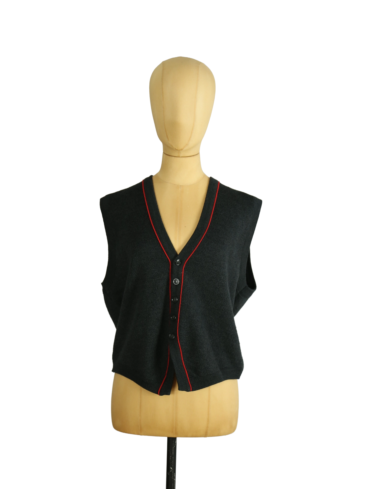

Balenciaga
119.00 €
Aus dem kuratierten Archiv von Disorder119. Ein reduziertes, funktionales Stück aus einer seltenen Kollaboration: Balenciaga entwarf diese Weste ursprünglich für die SNCF, die staatliche französische Eisenbahngesellschaft. Die Designs entstanden im Kontext von Arbeitsbekleidung mit erhöhtem Anspruch an Funktionalität, Sichtbarkeit und klarer Linienführung. Die schwarze Wollstruktur wird durch eine präzise gesetzte rote Paspelierung entlang der Front und des Ausschnitts gebrochen. Die Silhouette ist leicht boxy, mit offenem Armansatz und einer ruhigen, technischen Ausstrahlung. Die Knopfleiste fügt sich nahtlos in das Gesamtbild ein und unterstreicht den utilitären Ursprung. Tragbar sowohl als eigenständiges Piece als auch im Layering-Kontext. Details: Marke: Balenciaga Farbe: Schwarz Größe: 3 Passform: Locker, leicht boxy Verschluss: Knopfleiste Material: Wolle Herstellungsland: Frank
Im Archiv ansehen & in den Warenkorb →